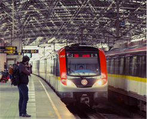

上海市公安局 上海市公安局使用本系统实现了对办公楼快递人员、盗窃人员的预防；日常巡逻过程中，通过手机对被盘查人员进行脸部检测，实现与后台名单库进行比对；利用视频分析系统，对大量视频中目标的轨迹及目标再视频中的位置进行获取和分析，节省了大量人力成本。
衢州市公安局 衢州市公安局通过本系统实现了对看守所，监狱日常人员管理、异常人流分析及人员分级管理等功能。
武汉市公安局 本系统为武汉市公安局提供了实时动态人脸身份记录、重点人口库行踪记录及统计分析、人脸记录反查及人员轨迹分析等功能。截至2017年7月，公安人员通过系统的报警及反查、轨迹分析等信息，已成功抓获了4名犯罪嫌疑人，为社会治安防控提供了有礼的支持。
新疆维吾尔自治区公安厅 新疆维吾尔自治区公安厅使用本系统通过对边境居民建立白名单，有效的控制了边境贸易的正常化；通过建立临时白名单和黑名单，高效快速的定位越境人员和疑似人员的身份，有效的控制了此类人群的出境入境，为安保工作提供了更为安全、快捷的结束手段。
博鳌论坛 我司受公安部委托，携重大会议保障系统承担了2017年3月23日至26日在海南博鳌举行的博鳌亚洲论坛2017年年会的部分安全保障工作。该系统以视频人像数据为基础，通过大数据监控平台，建立四级安全防范体系，实现实时人证合一验证、黑白名单比对、报警、统计报表等功能为本次会议提供最高级别的安全保障。
一带一路 “一带一路”国际合作高峰论坛，与2017年5月14日至15日在北京举行。我司受公安部委托重大会议保障系统承担了该年会的部分安全保障工作。系统支撑了合计包括1500名外国嘉宾、超过4000名中外记者以及超过10万安保人员的安全保障工作，以及会场周边的车辆识别分析工作，为论坛的安全保障工作做出了突出的贡献。

金砖会议 金砖国家领导人吧第九次会晤，于2017年9月3日至5日在福建厦门举行。我司受公安部委托携重大会议保障系统和视频分析系统，为安保通信工作做出了贡献。
新疆某大学 我司在新疆某大学部署了一套封闭场所布控系统。系统在学校的两个出入口进行了人员信息采集和布控，实现了对该封闭场所的人员综合管理。系统建立了学校的教职工及学生的白名单库，依托实时的动态人脸检测和识别，通过对日常人员及访客的出入管理及异常人员行为的综合分析，极大地提升了学校的安全级别，为学校的区安全保卫工作提供了有力的支持。
武汉某大学城社区 我司在武汉某大学城社区部署了一套网络化布控系统。辖区面积1.8平方公里，下辖2所大中专院校，646家门店，常住人口3万余人，在校师生2.4万人。系统共借入了32路高清摄像头，建立了3万人的常住人口库。该系统通过对重点监控人员的实时动态视频人脸识别分析、反查和报警，同时提供人员行动轨迹数据，为社区公共安全做出了有效的监控和有力的保障。

上海地铁 我司受上海公安委托携人脸识别系统和车辆管理系统，在人流密集的地铁站进行布控。本系统运行过程中，有效地降低了地铁站外流动商贩和违章车辆的数量，为密集人流的安全和疏通做了有效的报账。并对小偷的预防、黄牛的预防起到了有效的监控。

上海某知名物业公司 我司与该物业公司合作共同建立智能化车辆管理系统，通过此系统能够实现智能化停车管理，如：停车自动扣费、通知相关车主移车、泊车等。